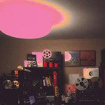
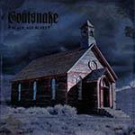
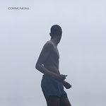
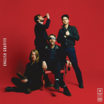
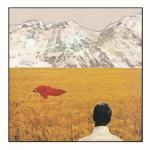

Music Reviews
-

Unknown Mortal Orchestra Multi-Love
With Multi-Love, UMO’s third album, Ruban Nielson's production prowess has shifted the songs into either dizzying complexity or relative clarity.
Joseph Moore reviews... -

Jamie XX In Colour
The famed English producer's debut full-length effort finds a perfect balance between being a statement on rave culture itself and reveling in sincere, in-the-moment exhilaration and emotion.
Brad Hanford reviews... -

Goatsnake Black Age Blues
Goatsnake’s first LP in fifteen years, Black Age Blues impresses.
Sean Caldwell reviews... -

Communions Communions EP
The Danish four piece's latest EP embraces the jangly, bittersweet gloom of eighties new wave, a noticeable contrast in sound from the impenetrable noise of their labelmates on outré label Posh Isolation.
Juan Edgardo Rodríguez reviews... -

The Vaccines English Graffiti
The West London foursome's third effort borrows eighties nostalgia in an effort to move away from their mod-pop punk beginnings.
Juan Edgardo Rodríguez reviews... -
Waxahatchee Ivy Tripp
Waxahatchee's music is undoubtedly sincere and unclichéd, but her lyrical opacity and musical simplicity make this a difficult album to relate to.
Stephen Wragg reviews... -

Lady Lamb the Beekeeper After
For her sophomore album, Lady Lamb the Beekeeper takes experimental structures and places them alongside some of the best, most direct songs of her career so far.
Joe Marvilli becomes fascinated with... -
The Tallest Man on Earth Dark Bird Is Home
Dark Bird Is Home is an improvement over the Tallest Man on Earth’s Shallow Grave, as it breaks out of his established musical palette just when it began to feel as if he had nothing else to offer.
Brad Hanford reviews... -

Joanna Gruesome Peanut Butter
The Cardiff noise pop's follow-up to Weird Sister rests upon its contradictions with tart arrangements that are lean and immediate, though prove to be exhausting when listened to in its entirety.
Juan Edgardo Rodríguez reviews... -
Blur The Magic Whip
The English veterans release their first studio album in 12 years.
Joseph Moore reviews...